✍️ [직접 채우기: 도입 — 자이엘라 사무소 앞에서 신촌역 쪽으로 걸어가며 본 노고산동 한 장면 (현장 사진과 함께)]
안녕하세요. 착한언니복덕방 신촌자이엘라&마포그랑자이 (착한언니) 부동산입니다.
2014년 겨울부터 신촌 한 자리, 12년째 마포·서대문만 보고 있어요.
자이엘라점에서 길만
건너면 신촌 노고산동이에요.
신촌역 바로 남쪽인데도
아파트가 거의 없던 동네였어요.
(2022년엔 "마포구에서 아파트 한 채 없는 동"이라는 보도도 있었죠)
그런데 올해 서울시 심의를
두 곳이 연달아 통과했어요.
구청이 구의회에 낸 정비계획 원문과
도면으로 하나씩 확인해 볼게요.
| 1. 먼저, 노고산동 재개발은 '지구' 단위예요 |
신촌역 일대는 2014년
'신촌지역(마포)
도시환경정비구역'으로
지정됐어요
(서울시 고시 제2014-304호).
아파트 재개발처럼 구역 전체를
한 번에 짓는 게 아니라,
구역을 작은 '지구'로
나눠 지구마다 따로 사업을 해요.
그래서 같은 구역 안에서도
어떤 지구는 다 지었고,
어떤 지구는
아직 시작도 안 했어요.
| 구분 | 아파트 재개발(예: 아현1구역) | 노고산동 도시정비형 재개발 |
| 단위 | 구역 전체 한 번에 | 지구별로 따로 |
| 용도지역 | 주거지역 위주 | 일반상업·준주거 (역세권) |
| 건물 | 단지형 아파트 | 초고층 주상복합 (40층대) |
| 시행 | 조합·SH 등 | 주로 토지등소유자 |
신촌로터리 건너편 서대문구 창천동
2-2지구를 보면 감이 와요.
같은 '신촌지역'
도시정비형 재개발인데,
여기는 2026년 1월에
이미 착공했어요.

▲ 신촌지역 도시정비형 재개발구역
2-2지구 (서대문구 창천동 18-42) —
크레인이 올라간 착공 현장
(직접 촬영 2026.11)

▲ 2-2지구 건축허가표지판 —
지하 5층~지상 22층 오피스텔·근생,
공사기간 2026.1.20~2028.6.30,
시공 대명건설 (직접 촬영)
| 2. 마포4구역, 19개 지구 지금 어디까지? |
마포4구역(노고산동 107-1 일대, 5만 2,583㎡)은
19개 지구로 나뉘어 있어요.
구청 자료의 현황표예요.
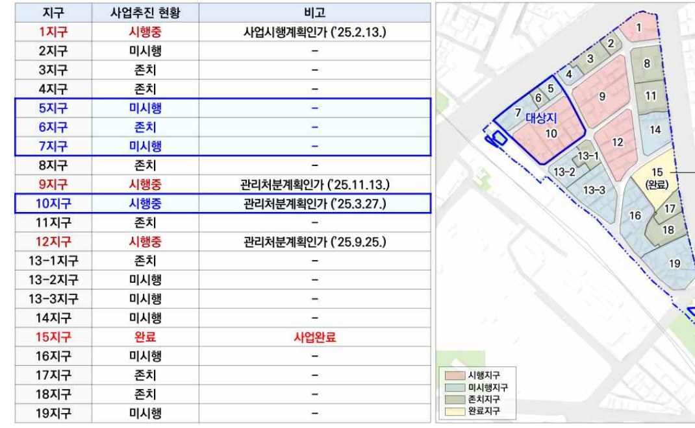
▲ 신촌지역 마포4구역
지구별 추진현황 및 위치도
(마포구의회 의견청취안 2026.2, 마포구청 제출)
| 지구 | 단계 (구청 자료 기준) |
| 1지구 | 사업시행계획인가 (2025.2.13) |
| 9지구 | 관리처분계획인가 (2025.11.13) |
| 10지구 | 관리처분계획인가 (2025.3.27) |
| 12지구 | 관리처분계획인가 (2025.9.25) |
| 15지구 | 사업 완료 (2025.5.29, 83.9m 업무시설) |
| 5·7지구 등 | 미시행 / 6지구 등은 존치 |
마포구의회
의견청취안(의안 26-29, 2026.2)
추진현황표 기준
| 3. ① 마포4구역 5·6·7·10지구 — 서강대역~신촌역 사이 49층 |
가장 큰 변화는 노고산동
109-62 일대예요.
이미 관리처분인가까지
받은 10지구에,
땅이 작고 경사가 심해 혼자
개발하기 어려웠던 5·6·7지구를
합쳐서 한 번에 짓기로 했어요.

▲ 정비계획 결정도 (기정) —
10지구와 5·6·7지구가 나뉘어
있던 모습 / 서울특별시고시
제2026-543호(2026.9.23)

▲ 정비계획 결정도 (변경) —
5·6·7·10지구 통합,
문화공원 부담 추가 / 서울특별시고시
제2026-543호(2026.9.23)
✔ 이 계획은 2026년
9월 23일 정비계획 변경
결정 고시까지 끝났어요
(서울시보 제4181호)
| 항목 | 기존 (10지구) | 변경 (5·6·7·10지구) |
| 시행면적 | 4,750.7㎡ | 7,813.2㎡ |
| 주용도 | 업무 | 주거 |
| 높이 | 89m 이하 (준주거 79m) | 165m 이하 (구의회 안) → 서울시 발표 최고 161m·지상 49층 |
| 용적률 (일반상업) | 500/660/767.71% | 600/659/973% (구의회 안) → 서울시 발표 939% |
| 세대수 | - | 497세대 (공공임대 53 포함) |
구의회 의견청취안(2026.2) → 서울시
도시계획위원회 수정가결(2026.6.26)
결과로 일부 수치 조정 · 최종 수치는
정비계획 변경 고시로 확인
| 전용면적 | 일반분양 | 공공임대 |
| 40㎡ 이하 | 28 | 22 |
| 40~60㎡ | 290 | 22 |
| 60~85㎡ | 79 | 9 |
| 85㎡ 초과 | 47 | - |
| 합계 | 444 | 53 |
구의회 의견청취안 '주택의 규모 및
규모별 건설비율' 기준 · 총 497세대
✔ 높이가 왜 이렇게 높아졌나요?
서울시가 2025년 규제를 풀면서
신촌 일대 기준높이를
80m(이면부 60m)에서
130m로 일괄 완화했고,
도로·공원 같은 공공용지를 내놓은
만큼 35m를 더 올려
165m까지 가능해졌어요
✔ 서강대역에서
신촌역까지 폭 6m 이상
평탄한 보행통로,
경의선숲길과 이어지는
소공원, 2층
문화시설(가칭 '서강대역 스페이스')·주거안심종합센터가
들어서요
✔ 단지 안에는
어린이놀이터·경로당·어린이집·주민운동시설이
계획돼 있어요
✔ 현장은 지금 —
철거가 끝난 빈 땅이에요.
해체공사 표지판 기준
노고산동 109-91
외 25필지,
해체규모 7,558㎡,
공사기간
2025.8.18~2026.1.31
(시공 자이에스앤디)
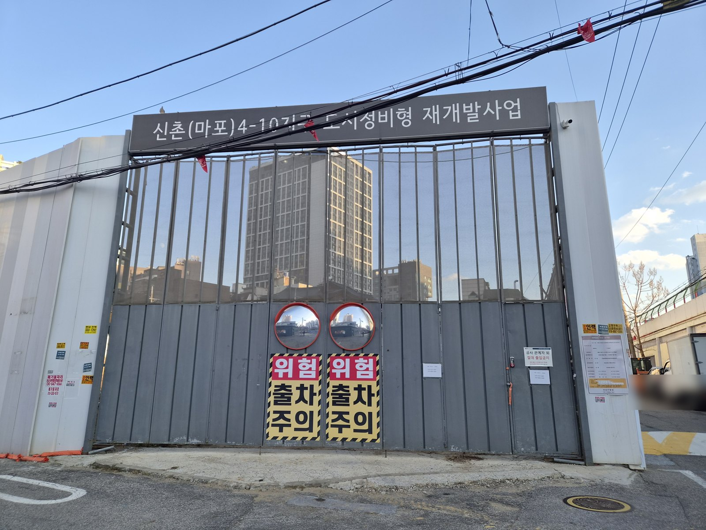
▲ 「신촌(마포)4-10지구
도시정비형 재개발사업」
공사장 출입구 (직접 촬영 2026.11)

▲ 가림막 안쪽 — 철거를 마치고
비어 있는 부지 (직접 촬영)
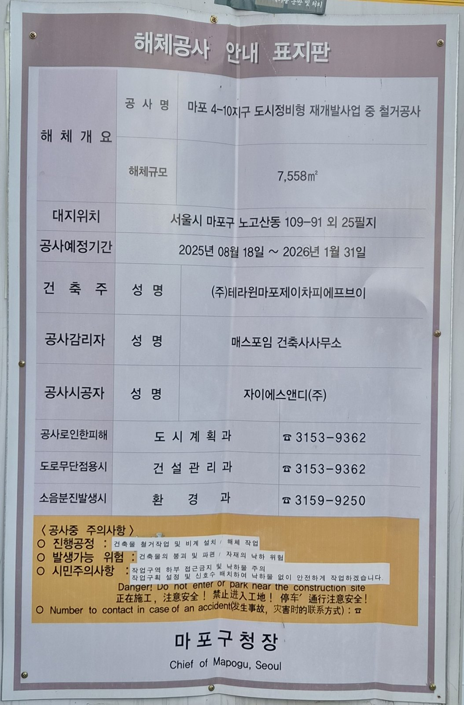
▲ 해체공사 안내 표지판 (마포구청장) —
2025.8.18~2026.1.31
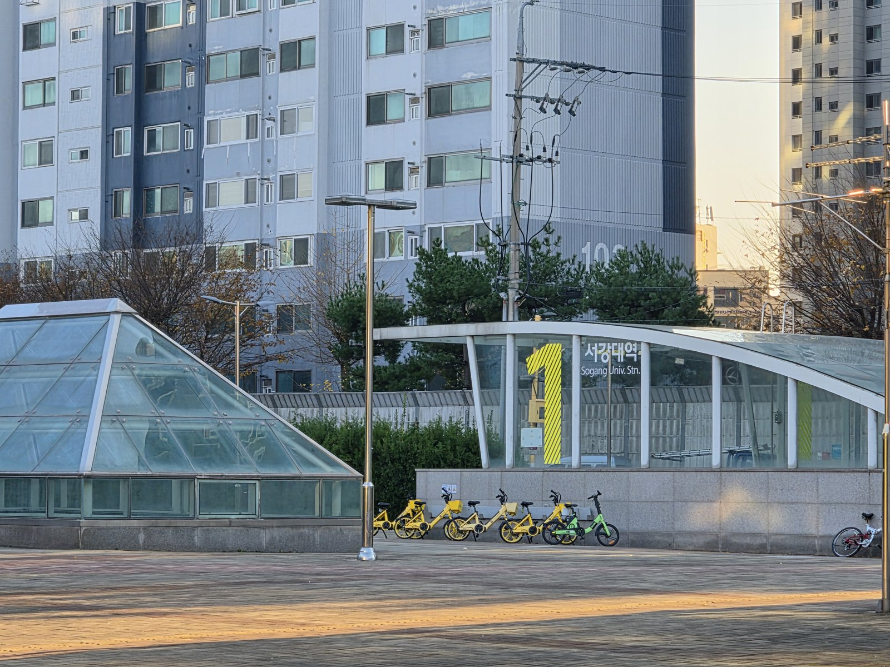
▲ 서강대역 1번 출구 —
현장 바로 옆이에요 (직접 촬영)
| 4. ② 마포3구역 3지구 — 신촌로터리 대로변 42층 2개 동 |
두 번째는 노고산동 31-77
일대(3,245㎡),
신촌로터리 방면 30m
대로에 붙은 자리예요.
2022년에 사업시행인가와
관리처분인가까지 받았지만,
사업성이 맞지 않아 멈춰 있었어요.
규제 완화를 반영해
계획을 다시 짰고,
2026년 8월 6일 서울시
통합심의를 조건부로 통과했어요.
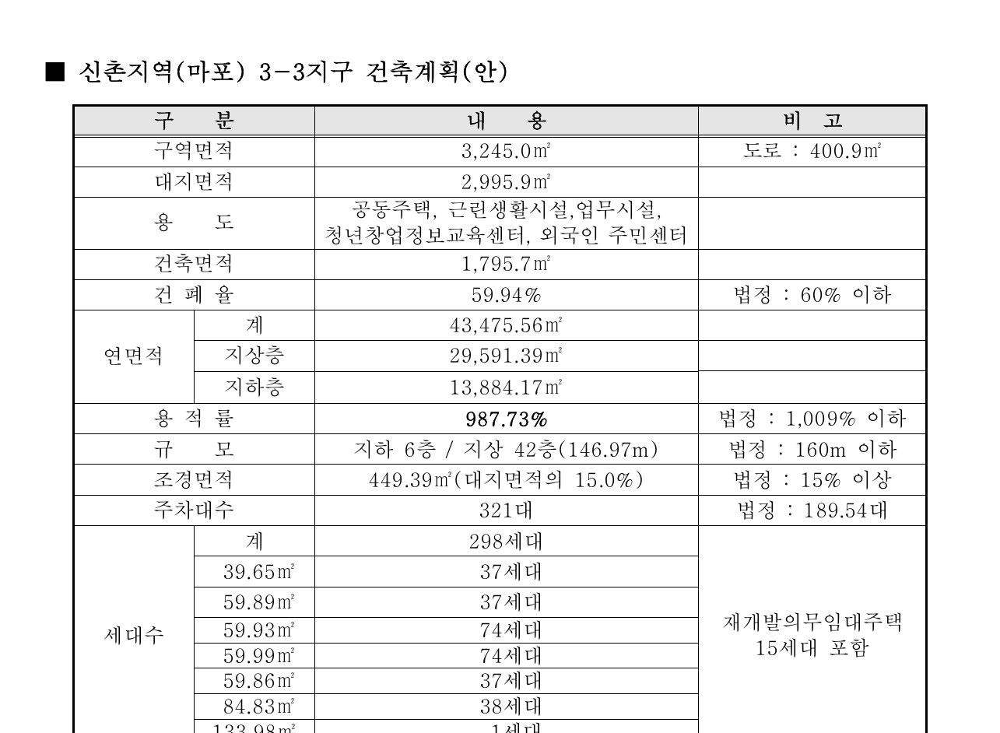
▲ 신촌지역(마포) 3-3지구 건축계획(안) —
지하 6층·지상 42층,
298세대
(마포구의회 의견청취안 2025.11)

▲ 배치도 — 42층 2개 동,
신촌로터리 방면 30m 도로 접함
| 항목 | 예전 계획 (2022) | 새 계획 |
| 층수 | 최고 27층 (보도) | 지상 42층 (146.97m) |
| 세대수 | 288세대 (소형 위주) | 298세대 (59㎡대 222 · 84㎡ 38 · 133㎡ 1 등) |
| 용적률 | 806.5% 이하 | 987.73% (법정 1,009% 이하) |
| 주차 | - | 321대 |
| 특별시설 | - | 청년창업정보교육센터 · 외국인주민센터 |
구의회
의견청취안(의안 25-139, 2025.11)
건축계획(안) · 재개발
의무 공공임대 15세대 포함 · 통합심의
조건부 의결 내용에 따라 바뀔 수 있어요
✔ 외국인주민센터가 들어서는
건 연세대·이화여대·서강대
유학생이 많은
신촌 특성을 반영한 거예요
서울시 지정 글로벌 부동산중개사무소인 그랑자이점과도 연결되는 변화라 반가운 소식이에요.
✔ 현장은 지금 — 철거 중이에요.
해체공사 표지판 기준
노고산동 31-77
외 13필지,
연면적 3,983.7㎡,
2026.9.1~2027.1.31,
진행공정 '철거공사'
(시공 자이에스앤디)
통합심의 통과 한 달 만에
철거에 들어간 거라,
멈췄던 사업이
다시 움직이는 건 분명해요.
다만 철거 다음 착공·분양
일정은 아직 발표 전이에요
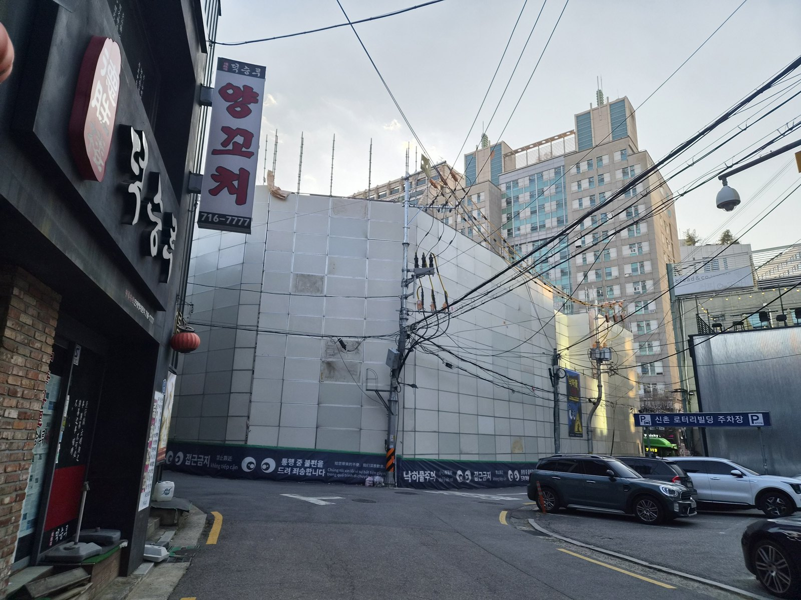
▲ 마포3구역 3지구 —
신촌로터리 쪽 가림막
(직접 촬영 2026.11)
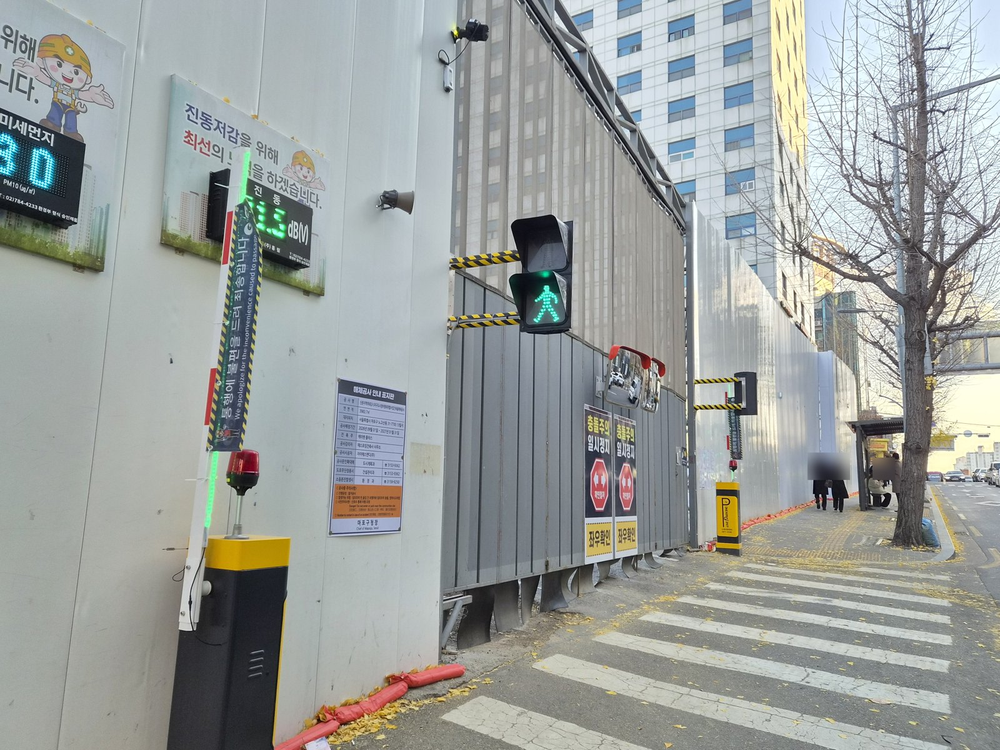
▲ 3지구 공사장 출입구 (직접 촬영)
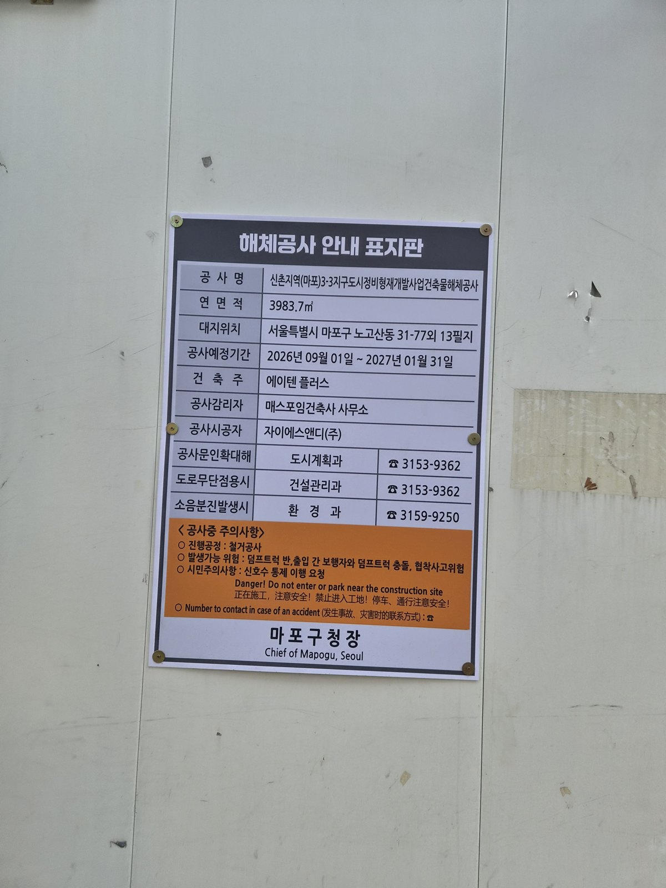
▲ 해체공사 안내 표지판 (마포구청장) —
2026.9.1~2027.1.31,
진행공정 철거공사
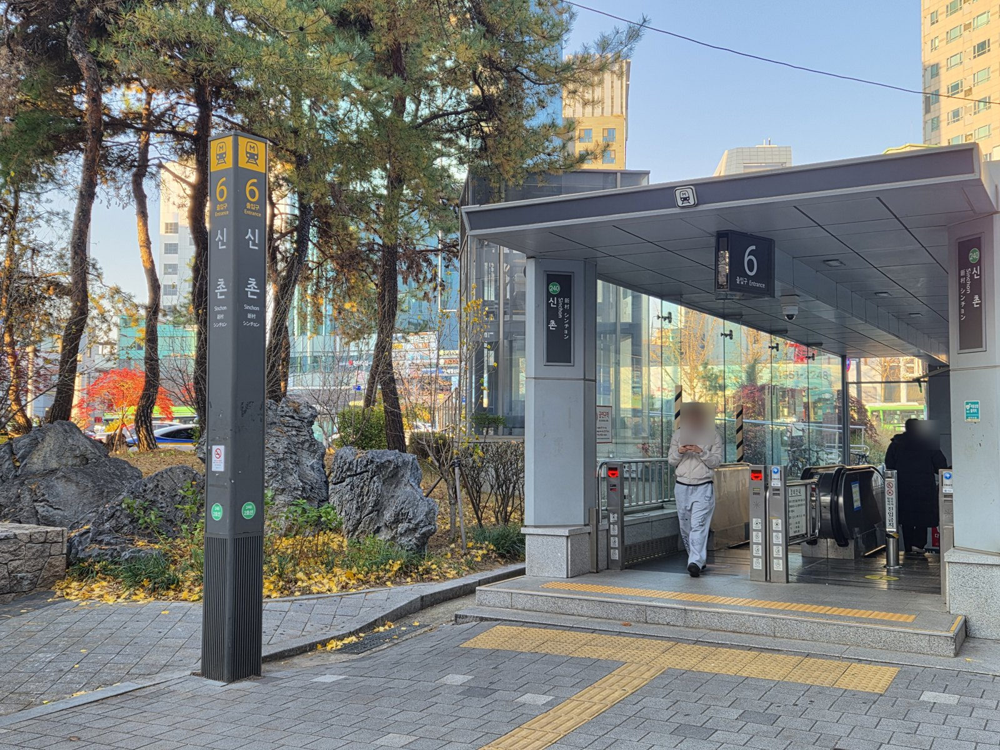
▲ 신촌역 6번 출구 — 3지구는
출구 바로 앞이에요 (직접 촬영)
| 5. ③ 노고산동 19-1 일대 — 아직 출발 전 |
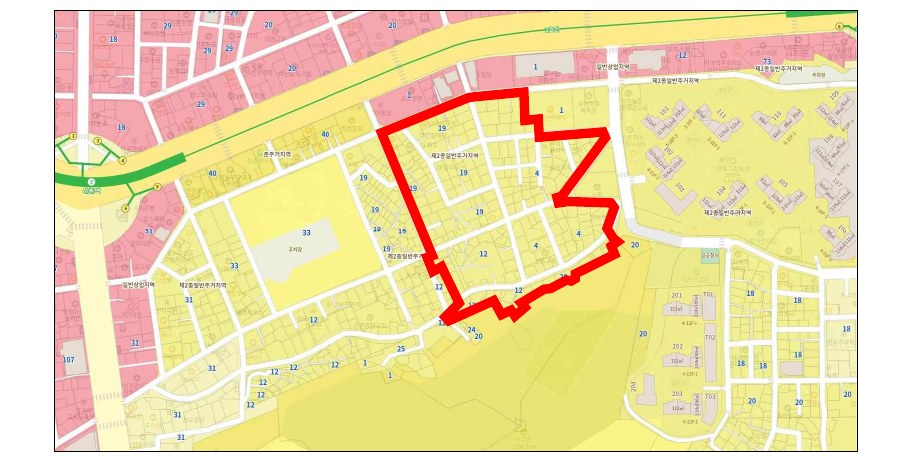
▲ 노고산동 19-1번지 일대 구역계
(신청인 제출안, 마포구 구역공개 2025.1)
—
후보지 추천 시 변경될 수 있음
| 시기 | 내용 |
| 2009.10 | 단독주택재건축 정비구역 지정 |
| 2013.4 | 정비구역 해제 |
| 2022 | 신속통합기획 공모 신청 (동의율 약 61%, 보도) |
| 2025.3 | 신통 후보지 신청 |
| 2025.6.30 | 미선정 — 반대 동의율이 입안취소 요건(25%)에 근접, 찬반 갈등 |
| 2025.11 | 동의서 번호 다시 부여 → 재도전 |
위클리한국주택경제(2025.11.18)·하우징워치(2022.11.14)
보도
· 2026년 후보지 선정 여부는
확인되지 않았어요 (마포구·정비몽땅 확인 필요)

▲ 창천초등학교 뒤 노고산 언덕 —
19-1 일대 저층 주택가
(직접 촬영 2026.11)
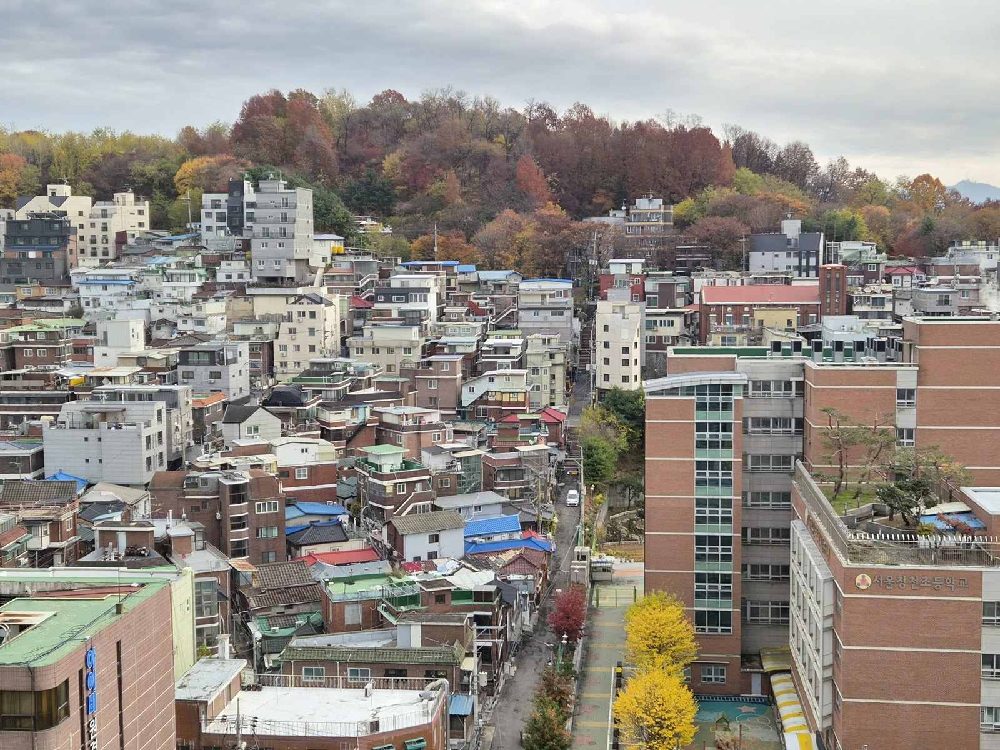
▲ 언덕을 따라 빌라·단독주택이
빽빽한 모습 (직접 촬영)

▲ 골목의 '노고산동 신속 민간재개발
추진위원회' 현수막
(직접 촬영 · 연락처 가림)
✔ 골목엔 추진위원회
현수막이 걸려 있어요.
다만 이곳은 후보지도
아닌 단계예요.
위 두 곳(철거 완료·철거 중)과
같은 속도로 보시면 안 돼요
| 6. 왜 하필 신촌일까 — 입지 3가지 |
노고산동에 40층대가
연달아 올라오는
건 규제 완화 때문만은 아니에요.
입지 자체가 받쳐주는 동네라서예요.
| 신촌 입지 | |
| ① 대학가 | 연세대·이화여대·서강대가 걸어서 닿는 거리 (홍익대도 한 정거장) — 학생·교직원·유학생 수요가 매년 새로 들어와요 |
| ② 여의도 | 신촌로터리에서 서강대교만 건너면 여의도 — 업무지구 출퇴근이 가까워요 |
| ③ 강남 | 신촌역 2호선 한 번에 강남역까지 (환승 없음) · 경의중앙선(신촌·서강대역) · 공항철도 홍대입구 한 정거장 |
역·노선 기준 · 실제 이동 시간은
시간대·교통 상황에 따라 달라요

▲ 신촌로터리 표지판 —
서강대교(여의도)·서강대·연세대가
한 교차로에 (직접 촬영 2026.11)
✔ 대학가 수요는 원룸·오피스텔을,
여의도·강남 접근성은
직장인 실거주 수요를 받쳐줘요.
노고산동 새 단지가 업무 → 주거로
방향을 바꾼 것도 이
흐름과 맞닿아 있어요
| 7. 착한언니 체크 — 노고산동을 보신다면 |
매수를 생각한다면
✔ 내 땅·건물이
몇 지구인지부터 확인해요
(같은 구역이라도 지구마다 단계가 달라요)
✔ 관리처분인가가
난 지구는 조합원 지위 양도
제한과 현금청산 여부를 꼭 확인해요
근처 원룸·오피스텔에 사신다면
✔ 노고산동 오피스텔 원룸은
최근 1년 실거래 기준
보증금 1,000만 원·월세
80만 원대가 가장 많아요
✔ 공사가 시작되면
소음·통행 불편이 생겨요 —
계약 전 공사장과 거리를
직접 걸어서 확인해요
'심의 통과'는 '착공'이 아니에요
✔ 정비계획 변경 고시
→ 사업시행계획(변경)인가
→ 관리처분(변경) →
이주·철거 → 착공 순서예요
✔ 지금 5·6·7·10지구는
철거 완료, 3지구는 철거 중,
건너편 2-2지구는 착공 —
같은 신촌인데 단계가 다 달라요
| 8. 정리하면 |
✔ 노고산동 재개발은
지구 단위라 속도가 제각각이에요
✔ 마포4구역 5·6·7·10지구:
4개 지구 통합,
지상 49층·497세대
(9.23 정비계획 변경 고시, 현장은 철거 끝난 빈 땅)
✔ 마포3구역 3지구:
지상 42층·298세대,
외국인주민센터
(8.6 통합심의 조건부 의결, 철거 중 ~2027.1)
✔ 19-1 일대:
신통 후보지 미선정 후
재도전 중 (추진위 활동)
자이엘라 사무소 바로 앞 동네라, 단계가 바뀔 때마다 도면과 함께 업데이트할게요.
| 📝 착한언니 현장 노트 |
11월에 노고산동 세 곳을
직접 걸어 봤어요.
4-10지구는 철거가
끝나 빈 땅이 됐고,
3지구는 가림막 안에서
철거가 한창이에요.
같은 노고산동인데도 한쪽은 빈 땅,
한쪽은 철거 중,
언덕 위 19-1은
현수막만 걸린 단계라
'노고산동 재개발'을
한 덩어리로 보시면 안 돼요.
| 📊 착한언니복덕방 실거래 도구 단지 시세 · 내 예산 진단 리포트 신촌 오피스텔 · 청약까지 공인중개사가 직접 만든 무료 도구예요 👉 unnizip.kr/app |
새 글 알림을 받고 싶으시다면 블로그 이웃 추가 해 두세요. 바로 옆 아현1구역 이야기도 함께 보세요.
🏠 방 구하기 문의 — 카카오톡 채널 착한언니복덕방에 「원하는 동네·예산·입주 날짜」만 남겨 주세요. 맞는 방을 골라 드려요.
인스타그램 @goodsister4080 에서는 이런 내용을 카드뉴스로 한눈에 정리해요.
쉽고 꾸준하게, 꼭 부자되세요!
────────────────
도면 출처: 마포구의회 의견청취안(마포구청 제출, 2025.11·2026.2), 마포구 구역공개(2025.1) · 수치는 정비계획(안)·심의 단계 기준이라 최종 고시와 다를 수 있어요 · 이 글은 투자 권유가 아니에요
착한언니복덕방 | 신촌자이엘라 & 마포그랑자이 부동산
4인 전원 공인중개사 · 중개보조원 없음
중개사무소: 신촌자이엘라부동산공인중개사사무소
대표 공인중개사: 신수경 · 등록번호 11410-2019-00062
소재지: 서울특별시 서대문구 대현동 104-36, B101호 · 연락처: 02-364-4080
카카오톡 채널: pf.kakao.com/_xcxoBxnX
붙여넣는 법 (PC 스마트에디터 ONE)
- ① 본문 전체 복사 → 글쓰기 화면 본문에 Ctrl+V
- ② 표·굵게·글자색·형광·가운데 정렬은 그대로 들어가요 (붙여넣은 뒤 표 색이 빠지면 표 선택 → 셀 배경색만 다시 지정)
- ③ 주황 점선 문장은 인용구로 바꿔 주세요: 붙여넣은 문장 지우고 → 상단 [인용구] → 오른쪽 목록의 「문장 복사」로 붙여넣기
- ④ 사진은 붙여넣기로 안 들어가요 → 회색 「▲ 설명」 줄 바로 위에 오른쪽 「이미지 내려받기」 파일을 올려 주세요 (▲ 줄은 사진 설명으로 그대로 두면 돼요) · ✍️ 빨간 줄 = 직접 채울 자리
- ⑤ 맨 아래 법정 표시는 「내 템플릿」에 저장해 둔 서명과 같아요 — 템플릿을 썼다면 이 부분은 지워도 돼요
인용구로 바꿀 문장
- 인용구 · 기본 한 줄 요약 마포3구역 3지구 42층 298세대(통합심의 통과) · 마포4구역 5·6·7·10지구 49층 497세대(정비계획 변경 통과) · 19-1은 아직 출발 전
이미지 내려받기 (직접 업로드)
- 신촌지역 도시정비형 재개발구역 2-2지구 (서대문구 창천동 18-42) — 크레인이 올라간 착공 현장 (직접 촬영 2026.11)
- 2-2지구 건축허가표지판 — 지하 5층~지상 22층 오피스텔·근생, 공사기간 2026.1.20~2028.6.30, 시공 대명건설 (직접 촬영)
- 신촌지역 마포4구역 지구별 추진현황 및 위치도 (마포구의회 의견청취안 2026.2, 마포구청 제출)
- 정비계획 결정도 (기정) — 10지구와 5·6·7지구가 나뉘어 있던 모습 / 서울특별시고시 제2026-543호(2026.9.23)
- 정비계획 결정도 (변경) — 5·6·7·10지구 통합, 문화공원 부담 추가 / 서울특별시고시 제2026-543호(2026.9.23)
- 「신촌(마포)4-10지구 도시정비형 재개발사업」 공사장 출입구 (직접 촬영 2026.11)
- 가림막 안쪽 — 철거를 마치고 비어 있는 부지 (직접 촬영)
- 해체공사 안내 표지판 (마포구청장) — 2025.8.18~2026.1.31
- 서강대역 1번 출구 — 현장 바로 옆이에요 (직접 촬영)
- 신촌지역(마포) 3-3지구 건축계획(안) — 지하 6층·지상 42층, 298세대 (마포구의회 의견청취안 2025.11)
- 배치도 — 42층 2개 동, 신촌로터리 방면 30m 도로 접함
- 마포3구역 3지구 — 신촌로터리 쪽 가림막 (직접 촬영 2026.11)
- 3지구 공사장 출입구 (직접 촬영)
- 해체공사 안내 표지판 (마포구청장) — 2026.9.1~2027.1.31, 진행공정 철거공사
- 신촌역 6번 출구 — 3지구는 출구 바로 앞이에요 (직접 촬영)
- 노고산동 19-1번지 일대 구역계 (신청인 제출안, 마포구 구역공개 2025.1) — 후보지 추천 시 변경될 수 있음
- 창천초등학교 뒤 노고산 언덕 — 19-1 일대 저층 주택가 (직접 촬영 2026.11)
- 언덕을 따라 빌라·단독주택이 빽빽한 모습 (직접 촬영)
- 골목의 '노고산동 신속 민간재개발 추진위원회' 현수막 (직접 촬영 · 연락처 가림)
- 신촌로터리 표지판 — 서강대교(여의도)·서강대·연세대가 한 교차로에 (직접 촬영 2026.11)


📷 촬영해서 넣을 사진
- 마포4구역, 19개 지구 지금 어디까지? 섹션: 15지구 완공 건물과 주변 지구 (신촌역 남측 대로변, 직접 촬영)
발행 정보
- 시리즈: 【재개발 현장】 — 제목 맨 앞에 그대로 붙여요
- 제목(BEST): 【재개발 현장】 노고산동 재개발 2026｜신촌역 49층·42층 두 곳 통과, 19-1은? (정비계획 도면 정리)
- 제목(대안): 【재개발 현장】 신촌 노고산동 재개발 지금 어디까지｜마포4구역 5·6·7·10지구·마포3구역 3지구 도면으로 보기
- 태그: 노고산동재개발, 노고산동, 신촌재개발, 마포4구역, 마포3구역3지구, 신촌역, 서강대역, 도시정비형재개발, 마포재개발, 신촌부동산, 이대부동산, 신촌공인중개사, 서대문부동산, 신촌자이엘라부동산, 착한언니복덕방
- 썸네일: 「신촌 노고산동 49층·42층」 / 「도면으로 보는 재개발」 / 「19-1은 아직」
- 도면 6장 배치 완료: 마포구의회 의견청취안(구청 제출 공문)·구역공개 공고 도면 — 출처 캡션 표기 · 투시도는 설계 저작물일 수 있어 제외
- 현장 사진 13장 반영 (11/21 촬영): 2-2지구·4-10지구·3지구·19-1 — 얼굴·번호판·연락처·번지판 블러 · 2-2지구 투시도 패널은 제외(허가표지판만)
- 사진 (촬영 남음): 15지구 완공 건물, 자이엘라 사무소 앞
- 확인 완료: 5·6·7·10지구 정비계획 변경 결정 고시 2026.9.23 (서울특별시고시 제2026-543호) · ⚠️ 발행 전: 3-3지구 서울시 고시 제2026-268호 원문, 19-1 2026년 진행